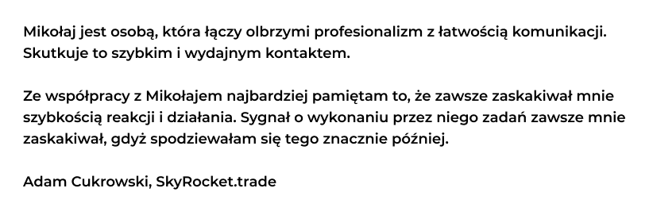

Jestem autorem uxowy.dev - newslettera dla developerów, którzy chcą robić aplikacje z lepszym UI i UX. Zdobyłem już zaufanie ponad 500 ludzi 👀
Projekty
uxowy.dev 2021 - teraz
Portal do publikacji newslettera i bloga oparty na systemie Ghost.
To mój pierwszy, w pełni autorski projekt, który nabrał rozpędu i służy większej grupie odbiorców. Wcześniej były: robimyaukcje.pl, lepszyfront.pl, ngcert.pl i inne, ale nie spotkały się z tak pozytywną reakcją odbiorców i je porzuciłem.
Portal spełnia rolę MVP projektu uxowy.dev.
Dzięki wybranym technologiom, w bardzo krótkim czasie utworzyłem
platformę, na której można:
- zbierać subskrybentów z możliwością planów płatnych
- wysyłać newsletter
- tworzyć wpisy na blogu
- tworzyć standardowe strony z treścią
- tworzyć niezliczone integracje z innymi platformami
Użyte technologie:
Zakres prac:
- utworzenie brandu uxowy.dev - logo & design
- utworzenie portalu na systemie Ghost,
- konfiguracja serwera (VPS),
- dostosowanie wyglądu portalu w Handlebars
- skonfigurowanie integracji z zewnętrznymi usługami, m.in.: Mailgun, Integromat, Zapier
Ja Pojadę 2021 - teraz
Innowacyjny system rekrutacji kierowców.
Moją misją w tym projekcie, poza programowaniem, jest poprawa UI i
UX aplikacji.
Prace trwają 🔥
Użyte technologie:
Zakres prac:
- podstawowy research UX
- tworzenie prototypów i designu aplikacji webowej i mobilnej
- programowanie frontu aplikacji webowej
- przyjmowanie zgłoszeń ze strony biznesu
- "tłumaczenie" języka biznesu na język programistów
SkyRocket.trade 2018 - 2021
Platforma do handlowania kryptowalutami na najpopularniejszych giełdach, oferująca niedostępne tam zaawansowane funkcjonalności i narzędzia.
Był to, jak dotychczas, najbardziej skomplikowany i wymagający projekt frontowy jaki miałem okazję tworzyć. Odkryłem w nim m.in. sposoby na poprawę szybkości aplikacji Angularowej i optymalizację kodu. Napisałem w nim też swoje pierwsze testy jednostkowe frontu.
Użyte technologie:
Zakres prac:
- proponowanie rozwiązań i tworzenie mocków
- programowanie frontu aplikacji webowej
- przyjmowanie zgłoszeń ze strony biznesu
Referencje:
Kliknij, aby zobaczyć: De Diet Catering 2020 - 2021
Jeden z największych dostawców diety pudełkowej w Polsce tworzony we współpracy z Ewą Chodakowską.
Po raz pierwszy miałem tutaj styczność z komercyjnym wykorzystaniem Vue i Vuex. Brałem udział w wykonaniu wewnętrznego systemu do realizacji zamówień, publicznego formularza do składania zamówień i pierwszej wersji panelu klienta.
Użyte technologie:
Zakres prac:
- proponowanie rozwiązań i tworzenie mocków
- design elementów stron publicznych
- programowanie frontu aplikacji webowej
Referencje:
Kliknij, aby zobaczyć:
AgileBoard 2017 - 2019
System do organizacji pracy. Zapewnia łatwe planowanie i gromadzenie wszelkich danych o projekcie m.in. bazę wiedzy, pliki, zadania.
Był to mój pierwszy komercyjny projekt, w którym brałem udział. Pod okiem doświadczonego developera uczyłem się programowania frontu z pomocą frameworka AngularJs.
Użyte technologie:
Zakres prac:
- wdrażanie nowych funkcjonalności
- programowanie aplikacji frontowej
mamwiecej.pl 2017
Aplikacja internetowa do zarządzania budżetem domowym, analizowania kosztów i planowania inwestycji.
Była to pierwsza większa aplikacja internetowa stworzona w całości
przeze mnie.
Wykonana jako praca inżynierska na kierunku teleinformatyka (inż).
Praca obroniona na 5. 😉
Użyte technologie:
Zakres prac:
- wykonanie dokumentacji na potrzeby pracy dyplomowej
- projekt interfejsu użytkownika - duży nacisk na prostotę i łatwość użytkowania
- utworzenie prototypu w UXPin
- zaprogramowanie frontu aplikacji webowej
- zaprogramowanie backendu aplikacji, utworzenie API
Praca
Jestem aktualnie otwarty na propozycje:
- współpracy B2B
- w wymiarze 6 godzin dziennie (30h tygodniowo)
- jako front-end developer
- który realizuje lub bierze udział w procesie projektowania aplikacji (UI/UX)
Wynagrodzenie jest dla mnie tylko wynikiem dobrze wykonanej pracy.
To nie na nim się skupiam, a na projekcie, który będę realizował.
Jeśli szukasz aktualnie front-end developera i wszystkie powyższe punkty są dla Ciebie ok, będę bardziej niż wdzięczny za kontakt.